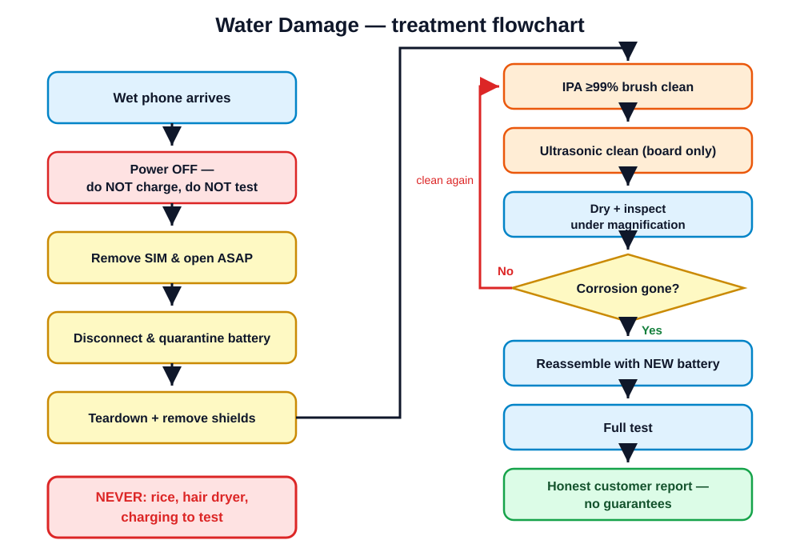

The clock starts the moment the phone gets wet. Learn to beat it.
1.5 h theory · 3 h practical · quiz
Open with a question: "Who has dropped a phone in water — and what did you do next?" Almost everyone will say rice. Don't correct them yet — write "RICE" on the whiteboard and promise to come back to it. That tension carries the whole module.
Emphasize the last bullet: water damage is where techs most often over-promise and get burned. Today they learn the technical protocol AND the words to say to the customer. Both are graded.
Water conducts. While the phone is powered, liquid bridges connections and current flows where it never should. This is the damage that happens in seconds.
Water + board voltage + dissolved minerals = electrolysis. The board literally eats itself — pads dissolve, traces rot. This continues for days to weeks, even after the phone "dries out".
A phone that "still works" after a dunk is not fine — attack 2 has already started.
Key concept of the module: the dunk is not the event, it's the START of the event. Analogy: water damage is a wound that keeps bleeding until it's cleaned. Ask: "If corrosion keeps going for weeks, what does that tell you about waiting a few days before bringing the phone in?" — every day of delay lowers the odds.
| Liquid | Corrosiveness | Why |
|---|---|---|
| Fresh / tap water | Moderate | Some dissolved minerals conduct and corrode |
| Salt / sea water | Extreme | Salt is an aggressive electrolyte — corrosion in hours, not days |
| Juice, soda, coffee | High | Sugars + acids corrode and leave conductive sticky residue |
| Toilet water | High | Salts and contaminants; also a hygiene hazard — glove up |
| Distilled water | Low | Barely conducts — but picks up contaminants on contact |
Always ask the customer WHAT liquid and WHEN. A beach phone from yesterday and a sink phone from an hour ago are completely different jobs with different odds. Mention: this is why "it fell in the sea on holiday last week" cases so often end as data-recovery-only jobs.
Rice may slowly absorb some ambient moisture — but the water is inside the phone, under shields, under chips, already corroding the board with its mineral load. Rice can't reach it, can't remove the minerals, and can't stop electrolysis.
Worse: the phone sits in a jar wasting the critical first 24–48 hours — exactly when professional treatment has the best odds.
Rice is for dinner.
resources/videos.mdNow pay off the whiteboard "RICE" from slide 1 — cross it out theatrically. Explain the myth survives because phones sometimes recover IN SPITE of rice (light exposure, got lucky), and rice gets the credit. Play Video 8.3 and afterwards ask: "What was still on the board after it looked dry?" — mineral residue, which keeps conducting and corroding.
Roleplay this: you're the panicking customer on the phone ("it fell in the sink, the screen is flickering, should I plug it in to see if it still charges?!"). Pick a student to talk you through the five steps. The instinct to "check if it still works" is the one to train out of customers — every check is a gamble.
The first 24–48 hours decide the outcome. A wet phone that waits on your shelf until tomorrow is a repair you already half-lost.
Set the shop policy explicitly: water damage is triaged like an emergency room. Even if you can't do the full treatment immediately, teardown + battery disconnect + first IPA rinse takes 20 minutes and freezes the damage clock. Everything else can wait; that can't.
They confirm liquid exposure when the customer's story is vague ("it just stopped working…"), and you must document their state at intake — before you open anything.
Demo live: flashlight into a SIM slot of a donor phone, show the class the LCI. Ethics point: customers sometimes hide the dunk hoping for a cheaper "normal" repair. The LCI tells you the truth — and photographing it at intake protects YOU when the phone later behaves like a water-damage phone. Never tamper with or "reset" an LCI for a customer's warranty claim — that's fraud.

Walk the flowchart start to finish once at high level: teardown → disconnect battery → remove EMI shields → IPA brush-clean → ultrasonic → dry → inspect under magnification → reassemble with NEW battery → full test. Tell them the next five slides zoom into each stage, and this exact flowchart is on the wall at every practical station.
Connect back to Module 3 skills — this is a normal teardown, done urgently. The battery-disconnect point is THE most important line in the protocol: it's the step that stops the board from actively eating itself. Shields: show a real board with clip-on vs soldered shields; explain we only remove what we can without board-level rework at this course level.
resources/videos.mdPlay Video 8.1 here — it shows stages 2–5 end to end, so the class sees the whole flow before you dive deeper into the ultrasonic. Live demo after: brush IPA over a corroded donor board under the camera/microscope so they see green fuzz lift off. Reinforce the 99% vs 70% point from Module 1 — quiz question guaranteed.
Board only. Never put the battery in an ultrasonic cleaner (puncture/fire risk), and never sealed components like speakers or vibration motors — the bath destroys them.
resources/videos.mdPlay Video 8.2, then run the classroom ultrasonic with a donor board so they hear and see it. Ask before the danger box reveal: "What in the phone must NEVER go in this tank?" Let them reason it out — battery (lithium + agitation = fire risk) and sealed acoustic parts. No ultrasonic in a future shop? A careful manual IPA clean is the fallback — lower success rate, still valid.
Impatience kills phones here. Rule of thumb: if you can smell solvent, it's not dry. Inspection is a loop, not a checkbox — boards routinely go back for a second clean. Missing pads / burned components mean board-level repair: at our course level that's "refer to a micro-soldering specialist", tying into Module 7.
| What you see | What it means |
|---|---|
| Green/white fuzz on connector pins | Active corrosion — usually cleans up well |
| Blackened / darkened pads | Burnt or heavily corroded — may still work after cleaning, test carefully |
| Fuzzy, furry IC legs | Corrosion creeping under the chip — ultrasonic is your only reach |
| Pads or traces missing | Eaten through — board-level repair or donor board; refer out |
Show macro photos or real boards for each row — students must SEE these before the practical, where identifying corrosion types is graded. Memory hook: "fuzz cleans, missing means machine-shop" — surface corrosion is your job, dissolved copper is a specialist's.
Build the new battery into the quote from the start. "Treatment + new battery" is the package — a water treatment that reuses the old battery isn't a professional repair.
Connect to Module 5: they know swollen-battery risks already. The business logic sells it — a $15 battery protects a $60 repair and your reputation. The old battery goes in the battery bin per Module 1 rules, never back in a phone, never in the trash.
Log results on the checklist. Anything that fails goes in the customer report — found now, not by the customer at home.
Water damage is the fault that hides: one dead microphone in a phone that otherwise works perfectly. That's why the test is a full-device sweep, not "it boots, ship it". This same checklist reappears in the final practical exam — learn it now.
Fresh water, treated fast: roughly 60–70% success.
Salt water, sugary drinks, or days of delay: far lower.
And a treated phone can work today and die next month — corrosion you couldn't reach keeps creeping.
Say all of this BEFORE the repair — never after.
A customer told the odds up front hears honesty. A customer told afterwards hears excuses.
This is the module's most important customer-skill slide. Have the class say the key sentence out loud together: "I can treat it, but water damage has no guarantee — it may work now and still fail later." Techs who skip this conversation fund the customer's next phone out of their own pocket.
Reframe the job: "dead phone" is often really "trapped wedding album". If treatment gets the phone booting, the FIRST action is a full backup — before extended testing, before returning it — because it may be the only boot you get. Data-first framing also softens the no-guarantee talk: even if the phone dies later, you saved what mattered.
"I'll open it today and treat the corrosion. The treatment fee is X whatever happens. Success for this kind of exposure is realistically 60–70%, and even a success can fail later — so there's no warranty on water damage, and you'll sign that before I start. If data matters most, tell me now and I'll make backup the first priority."
Pairs practice the script on each other — one plays a customer who pushes back ("Why pay if you can't promise it works?"). Answer: the fee buys hours of skilled treatment, not a guaranteed outcome — like a doctor's consult. Written no-guarantee policy is non-negotiable shop practice; Module 10 formalizes it in the intake form.
Class: listen for anything missed — you're the reviewers.
For #3, play the stubborn uncle: "Rice worked for my phone in 2019!" The student must explain survivorship — the phone survived DESPITE rice, and the wasted 48 hours is the real cost. If protocol recall is shaky, run the flowchart once more before releasing them to stations.
| Station | Task |
|---|---|
| A | Teardown & triage a pre-dunked donor board — disconnect, document, photograph before state |
| B | IPA brush-clean under magnification — identify each corrosion type found |
| C | Ultrasonic cycle + rinse + thorough dry (board only!) |
| D | Final inspection, after photos, and a written customer-facing outcome report |
Worksheet: practicals/practical-08-water-damage.md
Boards were dunked in salted water 48 h ago, so real corrosion is present. Before/after photos are graded evidence — enforce them. The outcome report must be in customer language: what was found, what was done, realistic prognosis, no-guarantee statement. Watch station C like a hawk: nothing but bare boards enters the tank.
Next: Module 9 — when the fault isn't hardware at all.
Hand out the Module 8 quiz from assessments/module-quizzes.md. While they work, review the outcome reports from station D — pick one good and one weak example (anonymized) to open the next session with. Tease Module 9: "Half the 'broken' phones that walk in have nothing physically wrong with them."